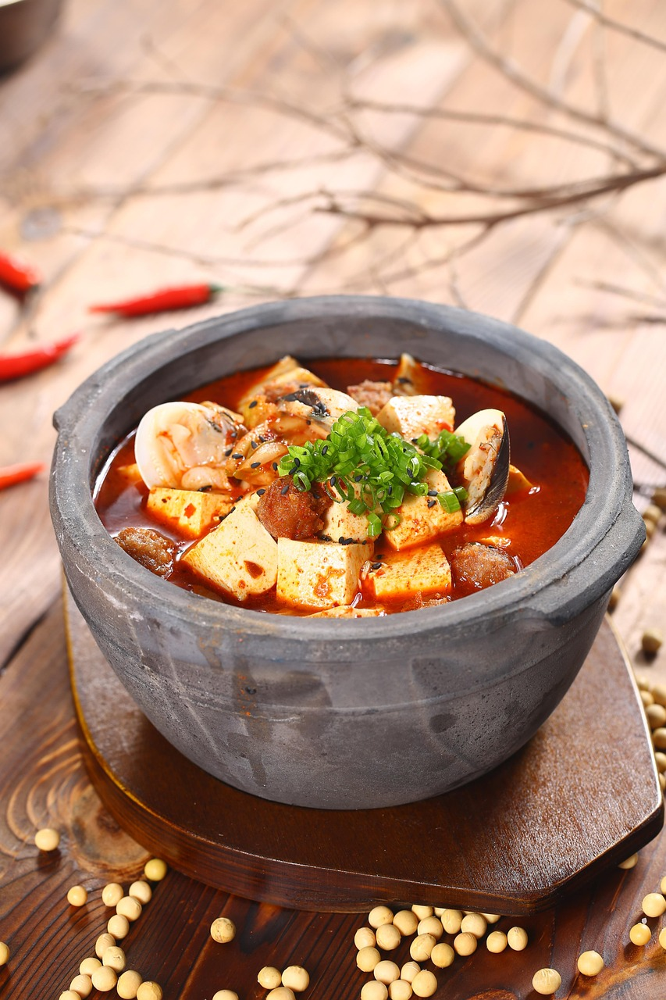

Mapo Tofu

Story of Mapo Tofu
Mapo tofu's story begins in Chengdu, the capital of China's Sichuan province, during the Qing Dynasty (1644~1912).
The dish is said to have been created by an old woman named Chen Po,
known for her pockmarked face (a feature that defined her nickname)
Nowadays, Mapo Tofu is a staple in Chinese restaurants all over the world,
and loved by many foodies both in the East and West!
What you Need:
- 1 tbsp cold water
- 1 ts cornstarch
- 1/2 lb ground pork
- 1 tbsp vegetable oil
- 1 tbsp minced garlic
- 1 tbsp minced fresh ginger root
- 16 oz package firm tofu, cut into 1 inch pieces
- 5 tbsp soy sauce
- 2 tbsp hot bean sauce
- 1 ts white sugar
- 3 green onions, chopped
- 1 ts sesame oil
What to Do:
- Mix water and cornstarch in a small bowl; set aside.
- Brown ground pork in a small skillet over medium-high heat, about 5 minutes
- Heat oil over medium-high heat in a large skillet or work.
Cook garlic and ginger in oil until fragrant, about 1 minute.
Stir in cut tofu and cook for 2 minutes. Season with soy sauce, hot bean
sauce, and sugars; stir to combine.
- Stir in cooked pork and green onion. Sprinkle with cornstarch and
water mixture; cook and stir until thickened, about 2 minutes.
Stir sesame oil into the thickened mapo tofu.
- Enjoy!